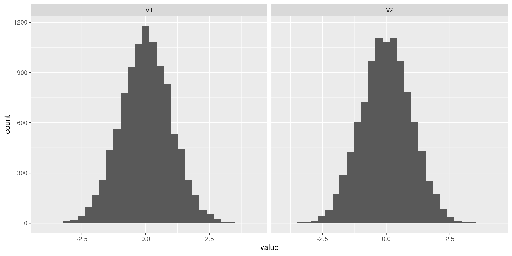

library(dplyr)
set.seed(12346)
n_draws <- 1000
dat <-
data.frame(
y = rpois(n = n_draws,
lambda = 0.001) # draw from poisson distribution with mean 0.001
)
dat |>
count(y) y n
1 0 997
2 1 3

By the end of the workshop you will:
10:00 – Welcome 10:15 – Data provenance: Types of criminological data 11:15 – Break 11:30 – Modelling: Telling stories with the general linear model 12:30 – Lunch 13:30 – Q&A 13:40 – Sensitivity analysis and critiquing results: Measurement error, selection and confounding in crime data 14:40 – Break 14:55 – Simulation methods and translating results: Making model coefficients meaningful with simulation 15:55 – Short break 16:05 – Discussing results and ethics 16:45 – Recap and Q&A 17:00 – Depart
R and RStudio on your own computerR installation, you can follow along in your browser via posit.cloud (free account required) [Ben post the link in the chat now]Like this!
Source: (Justice Analytical Services 2016)
Source: (Justice Analytical Services 2016)
Source: (Justice Analytical Services 2016)

Source: (Justice Analytical Services 2016)
Source: (Justice Analytical Services 2016)
 Source: (Justice Analytical Services 2016, p57)
Source: (Justice Analytical Services 2016, p57)
Stengths of recorded crime and victimization surveys
Source: (Justice Analytical Services 2016, p57)
For the standard linear regression model, we have:
\[ \begin{align*} y_i \sim & {Normal} (\theta_i, \sigma) \\ {Identity(\theta_i)} & = \alpha + \beta (x), \end{align*} \]
For the standard linear regression model, we have:
\[ \begin{align*} y_i \sim & {Normal} (\theta_i, \sigma) \\ {Identity(\theta_i)} & = \alpha + \beta (x), \end{align*} \]
The foundational model for count data is the Poisson model:
\[ \begin{align*} y_i \sim & {Poisson} (\lambda) \\ {log(\lambda)} & = \alpha + \beta (x_i), \end{align*} \]
The foundational model for count data is the Poisson model:
\[ \begin{align*} y_i \sim & {Poisson} (\lambda) \\ {log(\lambda)} & = \alpha + \beta (x_i), \end{align*} \]
lm(y ~ 1, data = dat) |> # fit intercept-only model with normal outcome
broom::tidy() |>
mutate(conf_low = estimate - 1.96 * std.error)# A tibble: 1 × 6
term estimate std.error statistic p.value conf_low
<chr> <dbl> <dbl> <dbl> <dbl> <dbl>
1 (Intercept) 0.003 0.00173 1.73 0.0833 -0.000391glm(y ~ 1, # fit intercept only model with poisson outcome
family = "poisson",
data = dat) |>
broom::tidy() |>
mutate(conf_low = estimate - 1.96 * std.error,
exp_est = exp(estimate),
exp_conf_low = exp(conf_low))# A tibble: 1 × 8
term estimate std.error statistic p.value conf_low exp_est exp_conf_low
<chr> <dbl> <dbl> <dbl> <dbl> <dbl> <dbl> <dbl>
1 (Intercep… -5.81 0.577 -10.1 8.16e-24 -6.94 0.00300 0.000968Here the confidence intervals are not properly expressing what we know to be true about our data (that it has to be positive).
simd <- readRDS(url("https://github.com/benmatthewsed/statistical-methods-criminology-slides/raw/master/resources/simd_crime_sim.rds"))
glm(crime_integer_sim ~ overcrowded_rate, # % living in overcrowded housing
family = "poisson",
data = simd) |>
broom::tidy() |>
mutate(conf_low = estimate - 1.96 * std.error,
conf_upp = estimate + 1.96 * std.error,
exp_est = exp(estimate),
exp_conf_low = exp(conf_low),
exp_conf_upp = exp(conf_upp))# A tibble: 2 × 10
term estimate std.error statistic p.value conf_low conf_upp exp_est
<chr> <dbl> <dbl> <dbl> <dbl> <dbl> <dbl> <dbl>
1 (Intercept) 2.37 0.00452 523. 0 2.36 2.37 10.7
2 overcrowded_ra… 5.63 0.0238 237. 0 5.59 5.68 280.
# ℹ 2 more variables: exp_conf_low <dbl>, exp_conf_upp <dbl>In this practical we’ll fit some count models in R
small world of our dataComparison of property crime and homicide rates using data from the police, a victimisation survey (CSEW) and vital statistics (NCHS), Figure 2 in Pina-Sanchez et al. 2022
rcmeR package rcme which implements some of these methods“Since the survey began in 1981, “repeat” incidents have been limited to a total of 5. Historically, including a maximum of 5 repeat incidents for any individual victim had proven to be an effective way of reducing the effects of sample variability from year to year. This approach enabled the publication of incident rates that were not subject to large fluctuation between survey years. This approach yields a more reliable picture of changes in victimisations over time once high order repeat victimisations were treated in this way.”
[INSERT FIGURE 2 FROM KNOX]
Knox et al (2020) FIGURE 2. Principal Strata and Observed Police–Civilian Encounters. Notes: The figure displays the four principal strata that comprise police–civilian encounters based on how the mediator M (whether a civilian is stopped by police) responds to treatment D (whether the civilian is a racial minority). Minorities in the “always stop” and anti-minority racial stop strata, highlighted in red, are stopped by police and, thus, appear in police administrative data. Likewise, white civilians in the “always-stop” and anti-white racial stop strata, highlighted in blue, appear in police data. “Never stop” encounters are unobserved. Because white and nonwhite encounters are drawn from different principal strata, the two groups are incomparable and estimates of causal quantities using observed encounters will be statistically biased absent additional assumptions.
Probably the biggest limitation of our study is that the … modeling approach we adopted assumes no unmeasured covariates linked to both treatment and outcome [emphasis added]. In practice, the criterion of having no unobserved confounding is impossible to verify… however, we tried to counteract this limitation by exploiting … [rich] data … It is hard to imagine what the missing time-stable or time-invariant covariates are that would overcome the magnitude and robustness of results.
We thus argue that omitted confounders would have to be implausibly large to overturn the basic results
And they continue in a footnote that formally assessing the possibility of bias from omitted confounders was “beyond the scope of the current paper” and would require assumptions about the magnitude, direction, and functional form of potential biases that ultimately raise more questions than they answer” (@ Sampson, Laub, and Wimer 2006, p499)
tipr R package for an implementation)Using either the generative story that you came up with in Session One, or the description of the SOI from the first practical, describe the possible effects of:
Are you concerned about all these? Some more than others? Are there obvious steps you could take to address them?
2.4573632-0.00030290 is 2.45736320 by \(exp()\)-ing the intercept, giving us 11.674 violent crimes1 * -0.0003029 (the coefficient for SIMD) to 2.4573632, and then \(exp()\) = 11.6706976 * -0.0003029 (the coefficient for SIMD) to 2.4573632, and then exponentiate = 1.41In fact, we can calculate these predictions across the whole range of SIMD.
This gives a much more useful summary of the results compared to just the model coefficients.
library(tibble)
library(ggplot2)
coef_draws <-
data.frame(
coef_sim = rnorm(
n = 10000,
mean = -0.000303, # model coefficient
sd = 0.0000106 # coefficient standard error
)
)
coef_draws |>
reframe(coef = quantile(coef_sim,
c(0.025, 0.975)), # these are 95% confidence intervals
interval = c("lower", "upper")) |>
mutate(exp_coef = exp(coef)) coef interval exp_coef
1 -0.0003238369 lower 0.9996762
2 -0.0002824340 upper 0.9997176If we plug in the coefficient for SIMD and the standard error of that coefficient, we can calculate confidence intervals for the coefficient.
The confidence intervals we calculated in the practical were \((0.9997178, 0.9996763)\)
Our simulated intervals are the same to six decimal places.
When we visualized the results from this model before we only got a point estimate for the expected number of violent crimes at each level of SIMD.
This doesn’t express the uncertainty in these results as described by the model’s standard errors.
But by using the clarify package we can get confidence intervals around our predictions.
As it turns out in this case the confidence bands are quite small, and don’t change our interpretation much - but we would not know this without calculating them.
The benefit of this simulation approach can also be used when we want to look at the effects of multiple variables, and where we want to describe more complex transformations of coefficients…
\[ \frac{\left(\text{ratio of victimization rates in year 2} - 1\right) - \left(\text{ratio of victimization rates in year 2} - 1\right)}{\text{ratio of victimization rates in year 1} - 1} \] - This is analogous to exploring the percentage change in victimization inequality between two comparison years
cor_data <- MASS::mvrnorm(
n = 10000,
mu = c(0, 0), # mu instead of mean
Sigma = matrix(c(1, 0.9, 0.9, 1), nrow = 2, ncol = 2) # Sigma instead of sd
) |>
as.data.frame()
cor_data |>
tidyr::pivot_longer(cols = c(V1, V2),
names_to = "variable",
values_to = "value") |>
ggplot(aes(x = value)) +
facet_wrap(~ variable) +
geom_histogram()
As we said before, we need to account for the correlation between model coefficients when simulating parameters from regression models.
If we use mvrnorm() the resulting simulations can be correlated. Here I set a correlation of 0.9.
V1 and V2 are both normally distributed…
R package written for this purpose# load packages
library(MASS)
library(tidyverse)
# reading in data
dat <-
tribble(
~prev, ~year, ~sex, ~n,
0.167, "2015", "men", 15030,
0.153, "2015", "women", 18320,
0.197, "2020", "men", 15505,
0.189, "2020", "women", 18230
)
# calculate the number of victims
dat <-
dat |>
mutate(vict = as.integer(n * prev))These are data from the Crime Survey for England and Wales showing victimization for men and women in 2015 and 2020. You can find more info on the data and approach here
We can fit a \(Binomial\) GLM to calculate the log-odds of being a victim for men and women. This is like fitting a logistic regression to data we have already aggregated1
In this example I fit a separate model for 2015 and 2020.
Model1 :
# A tibble: 2 × 6
term estimate std.error statistic p.value est
<chr> <dbl> <dbl> <dbl> <dbl> <dbl>
1 (Intercept) -1.71 0.0205 -83.4 0 0.181
2 fct_rev(sex)men 0.105 0.0300 3.49 0.000486 1.11 Model 2:
With a binomial model we can exponentiate the model coefficients to calculate the Odds Ratio of being a victim for men and women.
Model 1 shows a statistically significant difference for men (compared to women) in 2015, with men having 11% greater odds of being a victim of crime. In contrast, Model 2 finds that men had a 5% greater odds of being a victim of crime than women in 2020 - however this difference does not meet the 95% threshold for statistical significance.
Calculating the VD for these two results, based just on the odds ratios from the two models, shows that victimization inequality decreased by 52% between the two years.
From the models’ point estimates, we would conclude that victimization inequality between men and women fell by more than half between 2015 and 2020!
But this doesn’t factor in the uncertainty in the models’ coefficients.
We can pass the models’ coefficients and variance-covariance matrices to mvrnorm from the {MASS} library.
This gives us a set of 10,000 coefficients for each model which are consistent with the uncertainty in the models’ results.
draws_2015 <-
draws_2015 |>
as.data.frame() |>
as_tibble() |>
mutate(est = exp(`fct_rev(sex)men`))
draws_2020 <-
draws_2020 |>
as.data.frame() |>
as_tibble() |>
mutate(est = exp(`fct_rev(sex)men`))
# combine the results
sim_dat <-
tibble(
vd = victim_divide(base_y1 = draws_2015$est,
base_y2 = draws_2020$est)
)Once we tidy the results up a bit, we can pass these simulated draws to our victim_divide() function to get a distribution of VDs.
From these we can calculate confidence intervals to see how sure we can be that victimization inequality between men and women really did fall by 52%.
We can see the 2.5 and 97.5 percentiles of the simulated VDs, as well as the histogram of their distribution.
We can use these intervals to approximate a statistical significance test - if the interval includes zero the coefficient is not ‘statistically significant’ at the standard level.
These intervals include zero, so the apparent 52% reduction in victimization inequality would not be ‘statistically significant’ at the standard level.
clarify package, offers a powerful and flexible way to describe the uncertainty in these predictions that can be applied to any GLMThe typical focus of regression results is group average effect
Even if we have a statistically significant difference between two groups (say, people who live in high deprivation areas versus other areas) in the count of offences recorded by the police, on its own this doesn’t necessarily tell us about how likely any individual member of those groups is to offend
Focusing only on group averages can imply that all members of the group are the same
Causal quartets?
From Gelman, Hullman, and Kennedy (2023)
“Our results show substantial variation in adult conviction trajectories within sex and Indigenous status groups for people with identical observable characteristics, as well as between our four demographic groups… Even though we see a strong association between Indigenous status, sex and membership of the High/Persistent conviction trajectory (see Appendix 4), it would be wrong to assume that all Indigenous men with multiple childhood system contact end up with High/Persistent adult conviction trajectories—our model estimates that almost half of Indigenous men would not end up with a high-rate, persistent adult conviction trajectory even with this substantial childhood adversity.”
https://link.springer.com/article/10.1007/s40865-022-00204-z
More conceptually, it’s important to think about how we frame the results of any analysis.
Three visualizations from Data Feminism
language use
providing necessary context?
deficit narrative
“…a narrative that reduces a social group to negative stereotypes and fails to portray them with creativity and agency.” (https://data-feminism.mitpress.mit.edu/pub/czq9dfs5/release/3)
https://data-feminism.mitpress.mit.edu/pub/czq9dfs5#ndayi2fa1pk
The value of this exercise is not to say that any of these framings is ‘right’ (although for the reasons Klein and D’Ignazio outline we might find some preferable to others), but that they reflect different theoretical positions, and give different emphases to contextual factors - factors outside our datasets.
“The study that produced these numbers contains convincing evidence that we should distrust diagnosis numbers due to racial and ethnic discrimination. The first chart does not simply fail to communicate that but also actively undermines that main finding of the research.”
“Placing numbers in context and naming racism or sexism when it is present in those numbers should be a requirement—not only for feminist data communication, but for data communication full stop.”
Data Feminism is mostly aimed towards data scientists and data journalists, not academics. Does this change how we should view their recommendations?
(the original study: https://www.ncbi.nlm.nih.gov/pmc/articles/PMC4539829/)
Jessica T. Simes (2021) gives a good example of how we may want to come up with theoretically informed measures, or theoretically re-frame measures. Simes analysed imprisonment data from the state of Massachusets in the USA, including spatial regression of prison admission rates and how these relate to “racial demographics, social and economic disadvantage, arrest rates, and violent crime” (Jessica T. Simes 2018).
As part of this analysis Simes suggests that the cumulative years sentenced to residents of a particular neighbourhood be thought of as ‘community loss’.
{clarify})[https://iqss.github.io/clarify/] and ({marginaleffects})[https://marginaleffects.com/]
https://www.gov.scot/binaries/content/documents/govscot/publications/statistics/2021/10/reconviction-rates-scotland-2018-19-offender-cohort/documents/reconviction-rates-scotland-2018-19-offender-cohort/reconviction-rates-scotland-2018-19-offender-cohort/govscot%3Adocument/reconviction-rates-scotland-2018-19-offender-cohort.pdf
“Reconviction rates could be used to rank performance across different local authorities. However, there is an inherent problem in using this approach since it implicitly assumes that a difference in reconviction rates reflects a ‘real’ difference between local authorities. In reality, all systems within which these local authorities operate, no matter how stable, will produce variable outcomes in the normal run of events. In particular, outcomes in local authorities with smaller sized populations tend to vary more than those in local authorities with larger populations. The question we need to answer is therefore: Is the observed variation more or less than we would normally expect?”
https://www.gov.scot/binaries/content/documents/govscot/publications/statistics/2021/10/reconviction-rates-scotland-2018-19-offender-cohort/documents/reconviction-rates-scotland-2018-19-offender-cohort/reconviction-rates-scotland-2018-19-offender-cohort/govscot%3Adocument/reconviction-rates-scotland-2018-19-offender-cohort.pdf
“The funnel plot is a simple statistical method that takes into account the variability of different sized populations and so highlights whether there are differences that may be attributed to some other special cause… The plot takes into account the increased variability of the local authority groups with smaller populations, where a small increase in the number of reconvictions may lead to a large percentage change in the reconviction rate.
https://www.gov.scot/binaries/content/documents/govscot/publications/statistics/2021/10/reconviction-rates-scotland-2018-19-offender-cohort/documents/reconviction-rates-scotland-2018-19-offender-cohort/reconviction-rates-scotland-2018-19-offender-cohort/govscot%3Adocument/reconviction-rates-scotland-2018-19-offender-cohort.pdf
“Rates for local authority groups which lie inside the funnel are not significantly different from the national rate, and we can then usefully focus on possible explanations for rates which deviate significantly from the national figure.
Whilst this is useful for highlighting that there are practical differences in reconviction rates between each local authority group, even after taking into account differences in population sizes, it does not allow us to identify if this disparity is due to variation in the characteristics of offenders in each area or a variation in practices between different local authority groups. Different offender characteristics between local authority groups could include: age, sex, crime, disposal, deprivation, etc.

https://www.gov.scot/binaries/content/documents/govscot/publications/statistics/2021/10/reconviction-rates-scotland-2018-19-offender-cohort/documents/reconviction-rates-scotland-2018-19-offender-cohort/reconviction-rates-scotland-2018-19-offender-cohort/govscot%3Adocument/reconviction-rates-scotland-2018-19-offender-cohort.pdf
“Chart 12 is standardised to take into account some of the differences between local authority groups attributable to the characteristics of offenders, such as the number of previous offences, sentence, sex, and age. It provides the standardised reconviction rates3 against the observed number of offenders minus expected number of offenders. Since all local authorities groups are within the funnel it suggests that the apparent differences in reconviction rates in Chart 11 are primarily attributable to either the variation in the characteristics of the offenders, the type of crime they committed, or the sentence they received, rather than differences in ‘performance’ between the local authority groups.”
Second, the standard linear model assumes constant variance. But in practice we probably want more variance for larger counts.
(Figure from Roback and Legler (2021))
“Figure 4.1: Regression models: Linear regression (left) and Poisson regression (right) from Roback”